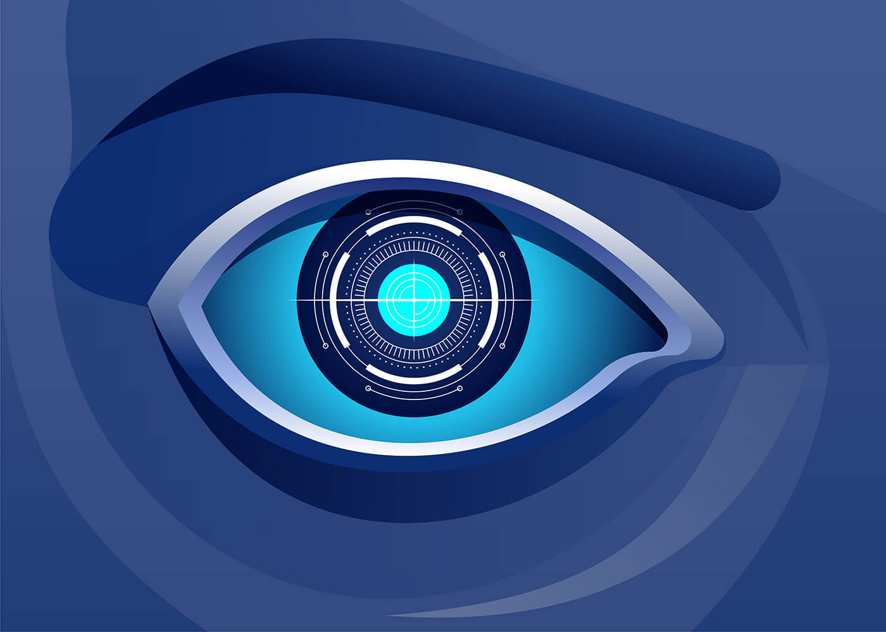

-
My Website
-
Home
-
Sources
Monitoring The Internet
Monitoring the Internet is complex, while there are multiple reasons why the Internet should be monitored, it should not be monitored by any one person/organization. The varied nature of the Internet, combined with the risks associated with centralized control, while considering Elon Musk's takeover of twitter, someone who has different idea of freedom of speech. Making the monitorization safe and fair would suggest a collaborative approach. It would involve the corporation between organizations, nations, and communities to make this possible.
Let's Talk About Twitter here

So Who Should Monitor The Internet?
The question of who should monitor the Internet is complex and multifaceted, and there are compelling reasons for various stakeholders playing a role. Let us discuss them. The Government for example can create laws and regulations to hold platforms accountable for harmful content, ensuring that public safety and protecting citizens from hate speech and the spread of misinformation. Nevertheless, there is a risk of overreach, censorship, and stifling free speech. Governments may also have varying standards of what constitutes harmful content. Non-Profit organizations can focus on specific issues like hate speech and misinformation and advocate for marginalized communities, while providing expertise and resources to help platforms improve their moderation practices. Still non-profits may lack the authority to enforce guidelines and may rely on funding and public support which can fluctuate. Social Media platforms have a direct interest in maintaining a safe and welcoming environment for their users. They can implement and enforce their own content moderation policies. Nonetheless, like Twitter, companies may have a different opinion of what constitutes hate speech and misinformation. Companies may also prioritize profit over user safety leading to inconsistent enforcement of policies and a lack of transparency. Users and community members can help monitor content within specific platforms, promoting a sense of ownership and responsibility for the community. Then again, this approach can lead to bias, uneven moderation, and potential abuse of power by overly zealous moderators. In the end I believe that collaboration among governments, non-profits, social media companies, and communities, can lead to balanced and effective guidelines, although it may be challenging and slow, it may be necessary to effectively monitor the internet and address the complex challenges it presents.
Link To A Non-Profit here
Intrested In A Coumminity? here